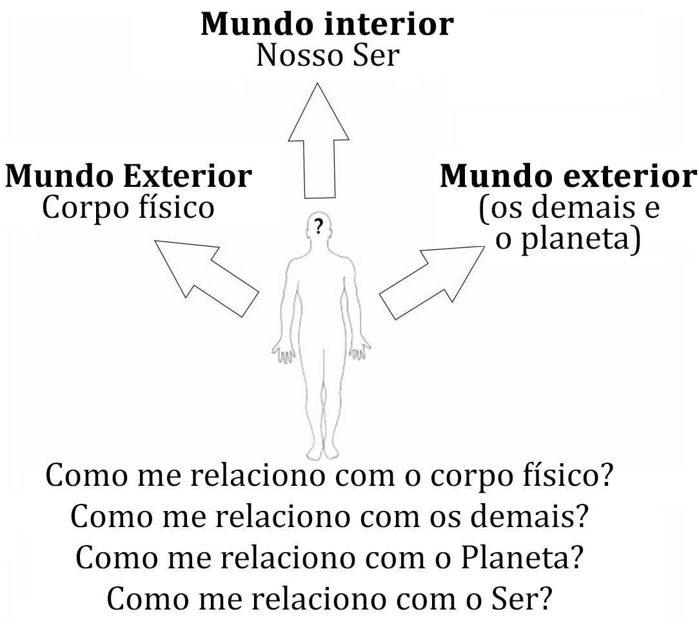

Conferência nº 26
O MUNDO DAS RELAÇÕES
O mundo das relações tem três aspectos muito diferentes que, de forma precisa, necessitamos esclarecer.
Primeiro: Estamos relacionados com o corpo planetário, ou seja, com o corpo físico.
Segundo: Vivemos no planeta Terra e, por consequência lógica, estamos relacionados com o mundo exterior e com as questões atinentes a nós: familiares, negócios, finanças, questões do ofício, profissão, política, etc., etc., etc.
Terceiro: A relação do homem consigo mesmo. Para a maioria das pessoas este tipo de relação não tem a menor importância.
Desafortunadamente, às pessoas só lhes interessam os dois primeiros tipos de relações, olhando com a mais absoluta indiferença o terceiro tipo.
Alimento, saúde, dinheiro, negócios constituem realmente as principais preocupações do “Animal Intelectual”, equivocadamente chamado “homem”.
Agora bem, resulta evidente que tanto o corpo físico como os assuntos do mundo são exteriores a nós mesmos.
O corpo planetário (corpo físico) às vezes se encontra enfermo, às vezes, saudável e assim sucessivamente.
Cremos sempre ter algum conhecimento do nosso corpo físico, mas na realidade, nem os melhores cientistas do mundo sabem muito do corpo de carne e osso.
Não há dúvida que o corpo físico, dada sua tremenda e complicada organização, está, certamente, muito mais além da nossa compreensão.
No que diz respeito ao segundo tipo de relações, somos sempre vítimas das circunstâncias. É lamentável que ainda não tenhamos aprendido a originar conscientemente as circunstâncias.
São muitas as pessoas incapazes de se adaptar a nada, ou a ninguém, ou ter êxito verdadeiro na vida.
Ao pensar em nós mesmos, do ângulo do trabalho esotérico gnóstico, faz-se urgente averiguar com qual destes três tipos de relações estamos em falta.
Pode acontecer o caso concreto que estejamos equivocadamente relacionados com o corpo físico e a consequência disto será que estejamos doentes.
Pode suceder que estejamos mal relacionados com o mundo exterior e, como resultado tenhamos conflitos, problemas econômicos e sociais, etc., etc., etc.
Pode ser que estejamos mal relacionados com nós mesmos e, consequentemente, soframos muito por falta de iluminação interior.
Obviamente, se a lâmpada de nosso aposento não se encontra conectada com a instalação elétrica, nosso aposento estará em trevas.
Aqueles que sofrem por falta de iluminação interior devem conectar sua mente com os Centros Superiores do seu Ser.
Inquestionavelmente, necessitamos estabelecer corretas relações não só com o nosso corpo planetário (corpo físico) e com o mundo exterior, senão também, com cada uma das partes do nosso próprio Ser.
Os enfermos pessimistas, cansados de tantos médicos e remédios, já não desejam curar-se; os pacientes otimistas lutam por viver.
No Cassino de Monte Carlo, muitos milionários que perderam sua fortuna no jogo suicidaram-se. Milhões de mães pobres trabalham para sustentar seus filhos.
São incontáveis os aspirantes deprimidos que, por falta de poderes psíquicos e de iluminação íntima, renunciaram ao trabalho esotérico sobre si mesmos. Poucos são os que sabem aproveitar as adversidades.
Em tempos de rigorosa tentação, abatimento e desolação, deve-se apelar para a íntima recordação de si mesmo.
No fundo de cada um de nós está a TONANTZIN asteca, a STELLA MARIS, a ISIS egípcia, Deus-Mãe, aguardando-nos para sanar nosso dolorido coração.
Quando alguém se dá o choque da Recordação de Si, produz realmente uma transformação milagrosa em todo o trabalho do corpo, de modo que as células recebem um alimento diferente.
